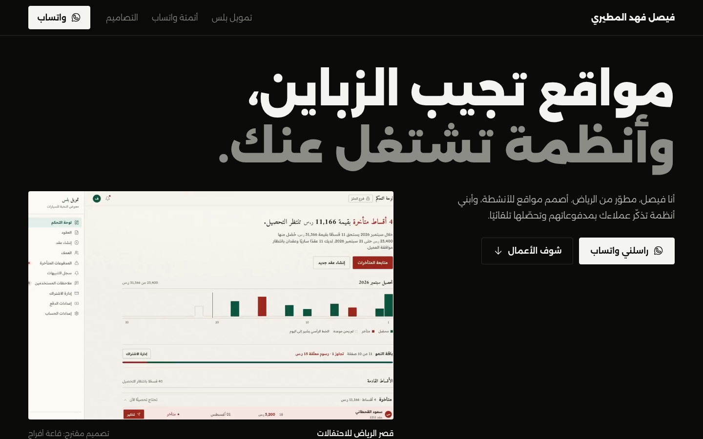
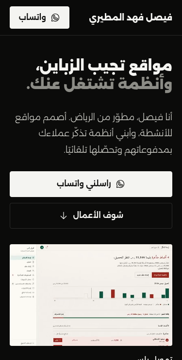

Site: https://faisalmt3.github.io/ (my own portfolio — real test, used as a sample) · Tested 30 Sep 2026 · Tester: Faisal Almutairi
Method: Playwright + Chromium 152 on Linux at 1440×900 (desktop) and 375×740 (phone-size viewport), manual review of every link and section. No real phones used.
2 issues found, both Low, both fixed and re-tested the same day. 1 suspected issue checked and ruled out. No blockers for launch.
| # | Issue | Where | Severity | Steps / evidence | Fix | Status |
|---|---|---|---|---|---|---|
| 1 | No favicon: browser requests /favicon.ico, gets 404 on every visit; tab shows a blank icon | All pages | Low | Open DevTools console on load → "Failed to load resource: 404". curl /favicon.ico → 404 | Added an inline SVG <link rel="icon"> | Fixed |
| 2 | Top menu links are 20 px tall — below the 24 px minimum target size (WCAG 2.2, 2.5.8) | Header, desktop | Low | Measured link boxes: 83×20, 95×20, 66×20 | Vertical padding on menu links → 50 px tall | Fixed |
| Suspected | Result |
|---|---|
| Checkout button returns 404 (seen from a script fetch) | Not a bug: the store redirects scripted requests; in a real browser the checkout page loads with the right product and price. |
| Image wider than the phone screen (1020 px) | Intended: the workflow diagram sits in a swipe box with a "swipe to see it all" hint. Page itself has no sideways scroll. |
| Check | Result |
|---|---|
| Links | All 22 links work: 5 in-page anchors resolve, 13 outside links load (200), WhatsApp and email links correct |
| Layout | No horizontal scroll at 375 px or 1440 px; Arabic RTL (lang="ar" dir="rtl") correct; phone number and email shown left-to-right |
| Accessibility basics | All 13 images have Arabic alt text; 0 buttons/links without a name; skip-to-content link present; one H1, logical H2/H3 order |
| Speed | Loaded in ~1.0 s desktop / ~0.9 s phone-size (fast connection); 3.2 MB desktop, 1.4 MB phone-size; below-the-fold images lazy-load |
| Search & sharing | Title, meta description, Open Graph image and viewport tag present |
| Console | No JavaScript errors (only the favicon 404, now fixed) |

